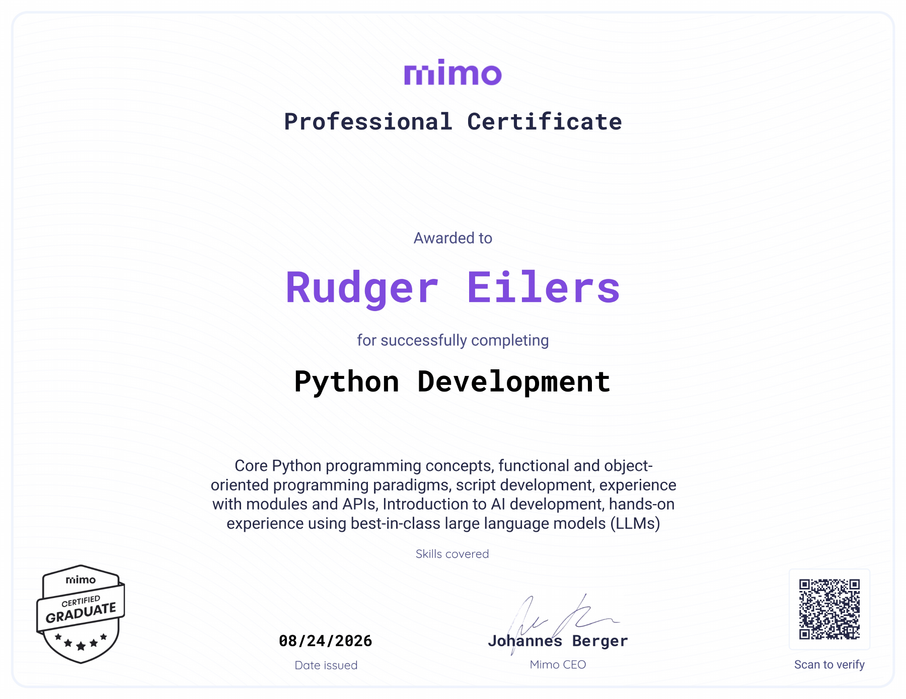
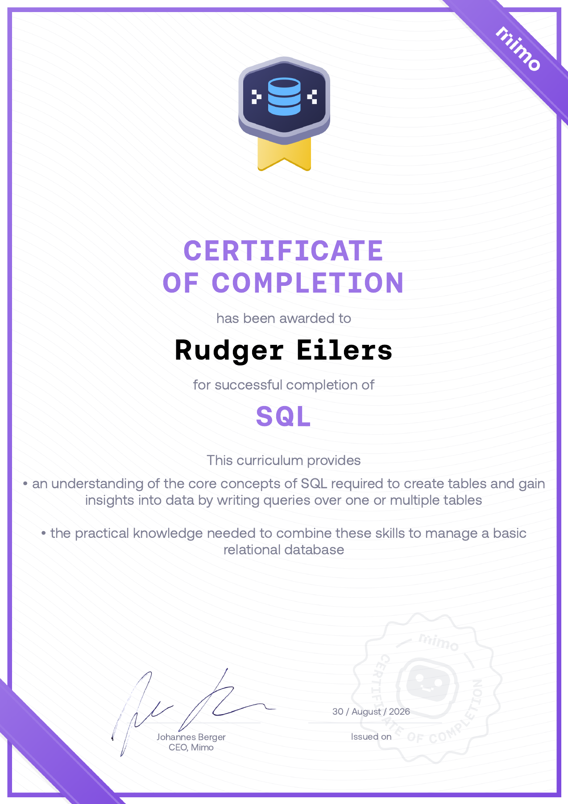

CYBERSECURITY • ETHICAL HACKING • DEVELOPMENT
My Journey of
Becoming a
Cybersecurity Ethical
Hacker
Van mijn eerste stappen op Hack The Box tot het leren bouwen en doorgronden van scripts, netwerken en webapplicaties. Dit is mijn persoonlijke reis richting penetration testing en cybersecurity.
$ whoami
aspiring_penetration_tester
$ cat current_focus.txt
HTB Academy • Penetration Testing • Python • SQL • Web Development
$ echo "Keep learning. Keep building."
Keep learning. Keep building.
01.
Over Mij
Mijn reis in de cybersecurity begon in het voorjaar van 2026 op Hack The Box, waar ik momenteel word opgeleid tot Penetration Tester.
Om de scripts en webapplicaties die ik tijdens het hacken tegenkom écht te doorgronden, ben ik als aanvulling gaan leren coderen via Mimo. Hier focus ik me op Python, SQL, HTML, CSS en JavaScript.
Ik ervaar het leren van deze programmeertalen als een ontspannen en logische volgende stap in mijn ontwikkeling tot security-expert.
Inmiddels combineer ik offensive-securityonderwerpen met networking, traffic analysis, Windows, Linux, Active Directory en onderdelen van incident handling. Hierdoor leer ik systemen niet alleen aanvallen, maar ook beter begrijpen vanuit het perspectief van verdediging en analyse.
02.
My Journey
Voorjaar 2026
De start op Hack The Box
Mijn eerste serieuze stappen in cybersecurity. Ik begin met Linux, networking, information security, enumeration en de basis van penetration testing.
2026
Penetration testing wordt breder
Ik verdiep me in Nmap, footprinting, web requests, Metasploit, vulnerability assessment, shells & payloads, Windows, Active Directory en network traffic analysis.
Zomer 2026
Programmeren als tweede fundament
Via Mimo bouw ik verder aan Python, SQL, HTML, CSS en JavaScript zodat ik security tooling en webapplicaties steeds beter kan begrijpen.
Nu
CJCA-leerpad voltooid, verder richting pentesting
Mijn Junior Cybersecurity Analyst-leerpad is afgerond; het CJCA-examen volgt in oktober 2026. Ik werk verder aan het Penetration Tester path en bouw eigen tooling.
03.
Skills ontwikkeld
Mijn skills komen voort uit hands-on labs, Academy-modules, programmeren en het zelf documenteren van wat ik leer.
Penetration Testing
Een systematische pentest leren uitvoeren, van footprinting en service-enumeratie tot het beoordelen van veelgebruikte services. Attacking Common Services is afgerond in HTB Academy.
Networking & Traffic Analysis
Netwerkverkeer en PCAP-bestanden analyseren met Wireshark. De Academy-module over pivoting, tunneling en port forwarding is afgerond; deze technieken helpen interne services en netwerksegmenten te begrijpen.
Web Security
Webapplicaties onderzoeken op toegangscontrole en kwetsbare gegevensverwerking. De labs Cap, Jerry en MetaTwo verdiepen mijn ervaring met IDOR, Tomcat, WordPress, SQL-injection en XXE.
Linux & Bash
Werken met Linux, Bash, permissies en services. In Cap heb ik geleerd hoe onnodige Linux capabilities op een interpreter het systeem kunnen blootstellen aan rechtenverhoging.
Windows & Active Directory
Windows-fundamenten, de Windows command line, Active Directory en veelgebruikte beheer- en enumerationconcepten.
Security Operations
Basisvaardigheden rond information security, incident handling, event-analyse en het bekijken van security vanuit defensief perspectief.
Python Development
Mimo Python Development afgerond op 24 augustus 2026. Python gebruiken voor automatisering, gegevensverwerking en eigen security-hulpmiddelen, met een basis in functies, objecten, modules en API’s.
SQL & Databases
Mimo SQL afgerond op 30 augustus 2026. Queries over één of meerdere tabellen schrijven, gegevens combineren en een relationele database beheren; deze basis helpt ook bij het begrijpen van SQL-injection.
Web Development
Mimo HTML afgerond op 2 september 2026. Webpagina’s opbouwen met semantische HTML en verder leren met CSS en JavaScript om layout en gedrag in de browser te begrijpen.
04.
HTB Academy Progress
Afgeronde leerpaden en modules, plus mijn voortgang in het Penetration Tester job role path. Bijgewerkt op 20 september 2026.
JOB ROLE PATH · VOLTOOID
100%
Junior Cybersecurity Analyst
Leerpad volledig afgerond. CJCA-examen gepland voor oktober 2026; certificering nog niet behaald.
JOB ROLE PATH · IN UITVOERING
43%
Penetration Tester
12 van 28 modules voltooid. Voortgang zoals weergegeven in HTB Academy. Level 56 · Rank Professional · 13 weken streak.
COMPLETED SKILL PATH
Cracking Into Hack The Box
COMPLETED SKILL PATH
Information Security Foundations
Linux Fundamentals
Network Foundations
Introduction to Networking
Information Security Foundations
Footprinting
Web Requests
Shells & Payloads
Vulnerability Assessment
Windows Fundamentals
Introduction to Active Directory
Attacking Common Services
Pivoting, Tunneling, And Port Forwarding
05.
Certificaten & Credentials
CJCA
LEERPAD VOLTOOID · EXAMEN GEPLAND
Junior Cybersecurity Analyst
Hack The Box AcademyHet volledige Junior Cybersecurity Analyst job role path is afgerond. Ik doe het CJCA-examen in oktober 2026. De certificering is nog niet behaald.
ISC2
CYBERSECURITY
Certified in Cybersecurity
ISC2Toegekend in juli 2026. Gericht op cybersecurity fundamentals en een brede basis in informatiebeveiliging.

DEVELOPMENT · BEHAALD
Python Development
Mimo · 24 augustus 2026Professioneel Mimo-certificaat voor Python-programmeren, objectgericht werken, modules, API’s en scriptontwikkeling.
Bekijk certificaat op volledig formaat ↗
DEVELOPMENT · BEHAALD
SQL
Mimo · 30 augustus 2026Mimo-certificaat voor SQL-query’s, het combineren van tabellen en het beheren van een relationele database.
Bekijk certificaat op volledig formaat ↗DEVELOPMENT · BEHAALD
HTML
Mimo · 2 september 2026Mimo-certificaat voor websitefundamenten en het opbouwen van webpagina’s met HTML.
Bekijk certificaat op volledig formaat ↗
06.
Write-ups
Technische documentatie van labs waarin ik mijn aanpak, bevindingen en belangrijkste lessen overzichtelijk vastleg.
Jerry
Apache Tomcat-beheer met standaardinloggegevens en een applicatieservice met te ruime rechten.
Lees write-up →Cap
Onvoldoende toegangscontrole op netwerkopnames, onversleutelde FTP-inloggegevens en te ruime Linux capabilities.
Lees write-up →MetaTwo
WordPress- en pluginbeveiliging, XML-verwerking, gelekte configuratiegegevens en de bescherming van een lokale wachtwoordkluis.
Lees write-up →Markup
XXE → SSH-sleutel → schrijfbaar job.bat.
Lees write-up →Included
TFTP-webshell → wachtwoordhergebruik → LXD.
Lees write-up →Paper
WordPress-informatielekken, geheimenbeheer rond Recyclops/HUBOT en een autorisatiefout in polkit.
Lees write-up →
07.
Projects
SuperScan v2
Automatiseert een recon-workflow voor geautoriseerde pentests: van een volledige TCP-poortscan en Nmap-serviceherkenning tot web-enumeratie en gerichte vervolgstappen.
- Nmap-serviceversies en standaard NSE-scripts; optionele vulnerability-checks.
- HTTP/HTTPS-detectie, ook op afwijkende poorten, met Gobuster en Nikto wanneer beschikbaar.
- Geordende scanbestanden, foutlogs en een Markdown-overzicht met pentest-vervolgstappen.
RootV3X Enumeration Assistant
Zet handmatig ingevoerde poorten of een Nmap XML-bestand om in een geprioriteerd overzicht van services. Helpt bepalen wat je vervolgens onderzoekt, zonder de voorgestelde commando’s zelf uit te voeren.
- XML-import van meerdere hosts, open poorten en servicefingerprints.
- Serviceprofielen op basis van Nmap-herkenning, met poortnummer als terugval.
- Enumeration-checklists, voorbeeldcommando’s, aandachtspunten en logische vervolgstappen per service.
RootV3x Cybersecurity Journey
Deze website: een groeiend portfolio waarin ik mijn skills, progressie, certificaten, tools en write-ups documenteer.
ACTIVE
08.
RootV3x CTF
Vier verborgen flags. Eén finale. Ontdek de aanwijzingen op deze website en verzamel de codefragmenten.
Waar begin ik? Bekijk de puzzels en hints
- Hidden in plain sight — niet alles staat op het scherm. Bekijk de HTML-broncode van de homepage.
- Terminal secret — typ
helpin de terminal bovenaan en verken de bestanden. - Decode me — in de terminal wacht een onderschept bericht om ontcijferd te worden.
- Follow the trail — drie machines, één bestemming. Zoek de route in de terminal.
Noteer elk codefragment en vul ze in bij Final Access.
Flag checker
Verken de website en vind de vier verborgen flags. Voer elke flag hieronder in om een codefragment te onthullen. Samen openen de fragmenten Final Access.
Final Access
Vier puzzels. Vier codefragmenten. Voer ze in de volgorde van de puzzels in.